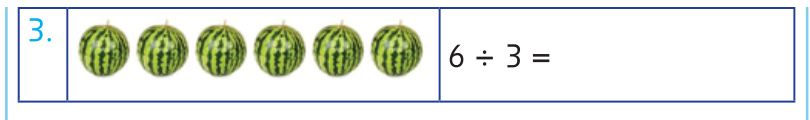
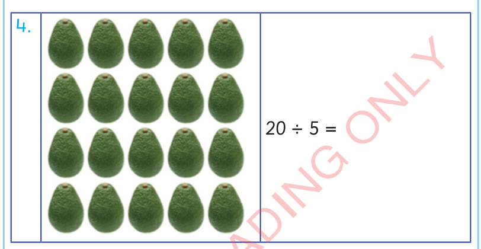
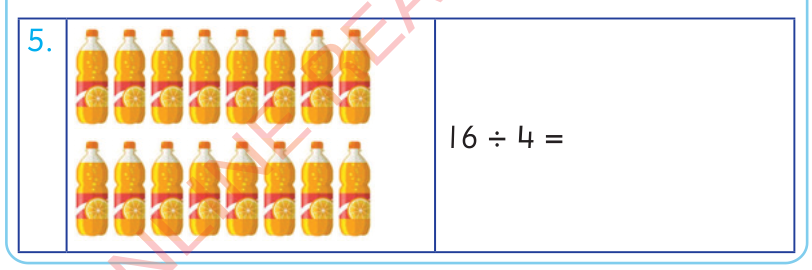

3.

4.

5.

Tugawanye kwa njia ya kutoa kwa kurudiarudia
Kutoa kwa kurudiarudia ni tendo la kutoa namba hiyohiyo kutoka kwenye namba kubwa mpaka kupata 0.
Mfano wa kwanza
Njia
Tutoe 2 kutoka kwenye 6 kwa kurudiarudia.